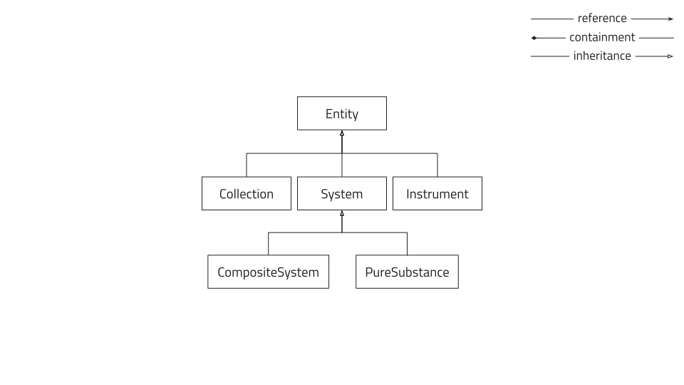
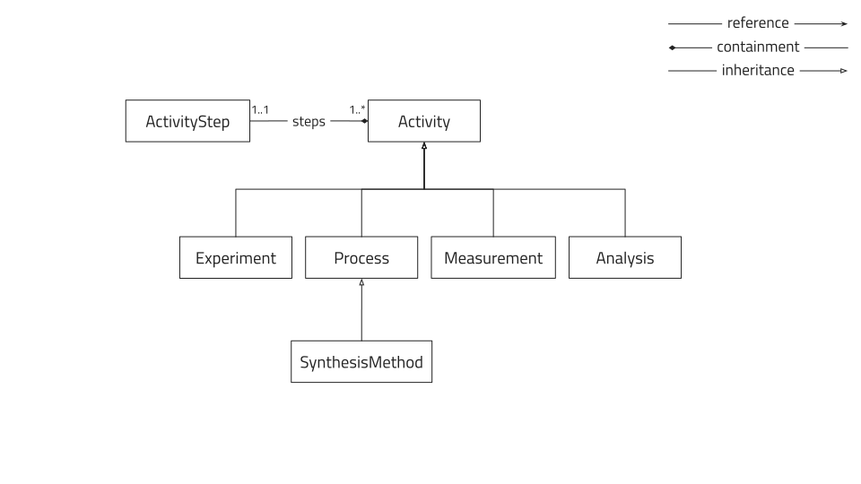

How to use base sections
As previously mentioned in "How to write a schema", base sections can be used when writing custom schemas to inherit properties, and more importantly, functionality from already defined sections. Here we explain the properties and functionality of specific base sections and how they can be used.
datamodel.metainfo.basesections¶
This built-in nomad module contains a set of base sections based on an entity-activity model.
Info
In this part of the documentation we use UML Class diagrams to illustrate the inheritance, composition and association between the base sections. For more information on UML Class diagrams please see en.wikipedia.org/wiki/Class_diagram.

All the base sections defined in this model are abstract in the sense that they cannot be
instantiated in NOMAD directly.
Instead, the user is expected to implement these in their own schemas by inheriting a base
section and nomad.datamodel.EntryData.
Furthermore, it is strongly encouraged to use the most specialized section applicable.
Example
If the user is writing a schema for an instrument in their lab, they should ideally
inherit from Instrument (and EntryData) rather than directly from Entity or
BaseSection.
All sections that are intended to eventually become entries in NOMAD by inheriting from
the entity-activity base sections inherit from BaseSection.
This section provides a set of global quantities that provides basic information about the
entry.
Theses are:
name: A short human readable and descriptive name.datetime: The date and time associated with this section.lab_id: An ID string that is unique at least for the lab that produced this data.description: Any information that cannot be captured in the other fields.
Entity¶
Info
By "Entity" we mean:
"An object that persists, endures, or continues to exist through time while maintaining its identity."
See BFO_0000002 for semantic context.
The Entity section is currently subclassed by System, Collection and Instrument.

Collection¶
The Collection section should be inherited when attempting to group entities together.

Example
The user wants to write a data schema for a batch of substrates.
As this is grouping entities together, they should inherit from Collection.
EntityReference¶
The EntityReference section can be composed in any Activity (see
Activity below) to provide a reference to an Entity.
The section contains the following quantities:
reference: A reference to a NOMADEntityentry.lab_id: The readable identifier for the entity.name: A short descriptive name for the role of this reference (inherited fromSectionReference).
The normalizer for the EntityReference class will attempt to fill the reference from
the lab_id or vice versa.
Instrument¶
The Instrument section should be inherited when describing any tools used for material
creation or characterization.

System¶
The main Entity section is System which is intended to cover any material system from
atomic to device scale.
This section adds the property elemental_composition which is a repeating subsection of
ElementalComposition sections.
Each elemental_composition section keeps track of a single element and its atomic
fraction within the system.
There are two specializations of System which differentiates
between the theoretical concept of a pure material, PureSubstance, and an actual physical
material combining several pure substances, CompositeSystem.

PubChemPureSubstanceSection¶
This is a specialization of the PureSubstanceSection which will automatically search the
PubChem database for additional information about the substance.
If a PubChem CID is specified the details are retrieved directly.
Otherwise a search query is made for the filled attributes in the following order:
smilecanonical_smileinchi_keyiupac_namenamemolecular_formulacas_number
Activity¶
Info
By "Activity" we mean:
"An action that has a temporal extension and for some time depends on some entity."
See BFO_0000015 for semantic context.
The Activity section is currently subclassed by Process, Measurement, Analysis,
and Experiment.
These subclasses are intended to cover all types of activities and should be used instead
of inheriting directly from Activity.

Experiment¶
The Experiment section should be inherited when attempting to group activities together.

Example
In a sample centric view the activities are grouped together by the sample but if the
researcher is instead interested in an experiment containing activities on multiple
samples, the Experiment section can be inherited to group these together.
Process¶
Info
By "Process" we mean:
"A planned process which results in physical changes in a specified input material. [ obi : prs obi : mc obi : fg obi : jf obi : bp ]
Synonyms:
- preparative method
- sample preparation
- sample preparative method
- material transformations"
See OBI_0000094 for semantic context.
The Process section is the base for the SynthesisMethod section which in turn is
specialized further in the nomad-material-processing
plugin detailed below.
The main feature of the Process section is that it adds ProcessSteps with a duration.

Info
By "SynthesisMethod" we mean:
"A method used to synthesise a sample."
See CHMO_0001301 for semantic context.
Measurement¶
Info
By "Measurement" we mean:
"A planned process with the objective to produce information about the material entity that is the evaluant, by physically examining it or its proxies. [ obi : pppb ]"
See OBI_0000070 for semantic context.
The Measurement section adds samples which are references to instances of (subclasses
of) CompositeSystem.

Analysis¶
Info
By "Analysis" we mean:
"A planned process that produces output data from input data.
Synonyms:
- data processing
- data analysis"
See OBI_0200000 for semantic context.
The Analysis section provides inputs which are references to any section (including
sub sections) of some archive.
In addition, it provides the outputs which is a repeating section of AnalysisResult
which are intended to be further specialized by the user.

ReadableIdentifiers¶
This base sub section is meant to be composed into the entity-activity sections mentioned above to provide a standardized readable identifier.
It is in turn composed by the following quantities:
institute: Alias/short name of the home institute of the owner, i.e. HZB.owner: Alias for the owner of the identified thing. This should be unique within the institute.datetime: A datetime associated with the identified thing. In case of anActivity, this should be the starting time and, in case of anEntity, the creation time.short_name: A short name of the the identified thing (e.g. the identifier scribed on the sample, the process number, or machine name), e.g. 4001-8, YAG-2-34. This is to be managed and decided internally by the labs, although we recommend to avoid the following characters in it: "_", "/", "\" and ".".lab_id: Full readable id. Ideally a human readable id convention, which is simple, understandable and still have chances of becoming unique. If theowner,short_name,ìnstitute, anddatetimeare provided, this will be formed automatically by joining these components by an underscore (_). Spaces in any of the individual components will be replaced with hyphens (-). An example would be hzb_oah_20200602_4001-08.
If owner is not filled the field will be filled by the first two letters of
the first name joined with the first two letters of the last name of the author.
If the institute is not filled a institute abreviations will be constructed from
the author's affiliation.
If no datetime is filled, the datetime will be taken from the datetime
property of the parent, if it exists, otherwise the current date and time will be
used.
If no short name is filled, the name will be taken from the parent name, if it
exists, otherwise it will be taken from the archive metadata entry name, if it
exists, and finally if no other options are available it will use the name of the
mainfile.
Example
The user has created a sample section by inheriting from CompositeSystem and EntryData.
Now, the user wants to automatically generate a readable lab_id based on the logged
in author.
This can be accomplished by composing the ReadableIdentifiers section into the users
sample section:
Plugin: nomad-material-processing¶
This plugin contains more specialized base sections for material processing, is maintained by FAIRmat and is currently hosted on https://github.com/FAIRmat-NFDI.